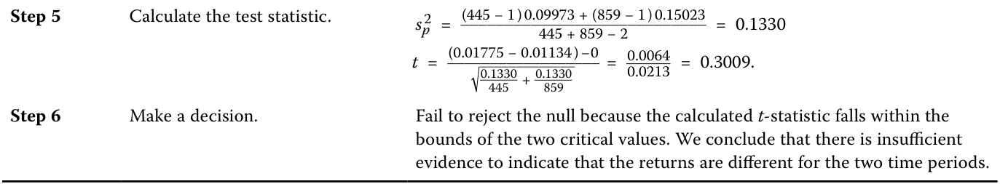
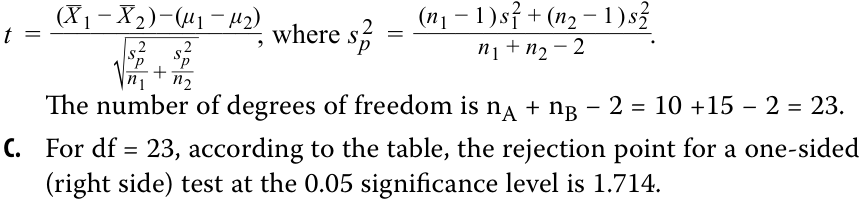
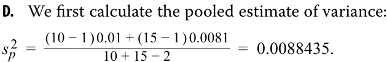
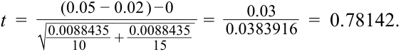
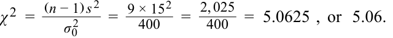

Learning Module 8 Hypothesis Testing - Part 2: Tests of Return and Risk in Finance
Volume 1: Quantitative Methods
Learning Module 8 Hypothesis Testing
Part 2/3: Tests of Return and Risk in Finance (PDF Pages 230–243)
Tập 1: Phương pháp Định lượng (Quantitative Methods)
Học phần 8: Kiểm định Giả thuyết (Hypothesis Testing)
Phần 2/3: Các Kiểm định Tỷ suất sinh lợi và Rủi ro trong Tài chính (Tests of Return and Risk in Finance) (Trang PDF 230–243)
- For each of the following hypothesis tests concerning the population mean, μ, state the conclusion regarding the test of the hypotheses.
-
A. H 0: μ = 10 versus Ha : μ ≠ 10, with a calculated t -statistic of 2.05 and critical t -values of ±1.984.
-
B. H 0: μ ≤ 10 versus Ha : μ > 10, with a calculated t -statistic of 2.35 and a critical t -value of +1.679
-
C. H 0: μ = 10 versus Ha : μ ≠ 10, with a calculated t -statistic of 2.05, a p -value of 4.6352%, and a level of significance of 5%.
-
D. H 0: μ ≤ 10 versus Ha : μ > 10, with a 2% level of significance and a calculated test statistic with a p -value of 3%.
- Đối với mỗi kiểm định giả thuyết sau đây liên quan đến trung bình tổng thể, $\mu$, hãy nêu kết luận về việc kiểm định các giả thuyết.
- A. $H_0: \mu = 10$ đối lập với $H_a: \mu \ne 10$, với thống kê $t$ tính toán được là $2.05$ và các giá trị $t$ tới hạn là $\pm 1.984$.
- B. $H_0: \mu \le 10$ đối lập với $H_a: \mu > 10$, với thống kê $t$ tính toán được là $2.35$ và giá trị $t$ tới hạn là $+1.679$.
- C. $H_0: \mu = 10$ đối lập với $H_a: \mu \ne 10$, với thống kê $t$ tính toán được là $2.05$, giá trị $p$ (p-value) là $4.6352\%$, và mức ý nghĩa là $5\%$.
- D. $H_0: \mu \le 10$ đối lập với $H_a: \mu > 10$, với mức ý nghĩa $2\%$ và thống kê kiểm định tính toán được có giá trị $p$ là $3\%$.
Solution:
Lời giải (Solution):
We make the decision either by comparing the calculated test statistic with the critical values or by comparing the p -value for the calculated test statistic with the level of significance.
Chúng ta đưa ra quyết định bằng cách so sánh thống kê kiểm định tính toán được với các giá trị tới hạn hoặc bằng cách so sánh giá trị $p$ của thống kê kiểm định tính toán được với mức ý nghĩa.
-
A. Reject the null hypothesis because the calculated test statistic of 2.05 is outside the bounds of the critical values of ±1.984.
-
B. Reject the null hypothesis because the calculated test statistic of 2.35 is outside the bounds of the critical value of +1.679.
-
C. The p-value corresponding to the calculated test statistic of 4.6352% is less than the level of significance (5%), so we reject the null hypothesis.
-
D. We fail to reject because the p-value for the calculated test statistic of 3% is greater than the level of significance (2%).
- A. Bác bỏ giả thuyết không vì thống kê kiểm định tính toán được là $2.05$ nằm ngoài giới hạn của các giá trị tới hạn $\pm 1.984$.
- B. Bác bỏ giả thuyết không vì thống kê kiểm định tính toán được là $2.35$ nằm ngoài giới hạn của giá trị tới hạn $+1.679$.
- C. Giá trị $p$ tương ứng với thống kê kiểm định tính toán được là $4.6352\%$ nhỏ hơn mức ý nghĩa ($5\%$), vì vậy chúng ta bác bỏ giả thuyết không.
- D. Chúng ta không bác bỏ giả thuyết không vì giá trị $p$ cho thống kê kiểm định tính toán được là $3\%$ lớn hơn mức ý nghĩa ($2\%$).
3
3
TESTS OF RETURN AND RISK IN FINANCE
CÁC KIỂM ĐỊNH TỶ SUẤT SINH LỢI VÀ RỦI RO TRONG TÀI CHÍNH (TESTS OF RETURN AND RISK IN FINANCE)
construct hypothesis tests and determine their statistical significance, the associated Type I and Type II errors, and power of the test given a significance level
Xây dựng các kiểm định giả thuyết và xác định ý nghĩa thống kê của chúng, các sai lầm Loại I và Loại II liên quan, cũng như lực kiểm định khi biết trước một mức ý nghĩa
Hypothesis tests concerning return and risk are among the most common in finance. The sampling distribution of the mean, when the population standard deviation is unknown, is t -distributed, and when the population standard deviation is known, it is normally distributed, or z -distributed. Since the population standard deviation is unknown in almost all cases, we will focus on the use of a t -distributed test statistic.
Các kiểm định giả thuyết liên quan đến tỷ suất sinh lợi và rủi ro nằm trong số những kiểm định phổ biến nhất trong tài chính. Phân phối mẫu của giá trị trung bình, khi độ lệch chuẩn của tổng thể chưa biết, có phân phối $t$ (t-distributed), và khi độ lệch chuẩn của tổng thể đã biết, nó có phân phối chuẩn, hay phân phối $z$ (z-distributed). Vì độ lệch chuẩn của tổng thể hầu như luôn chưa biết trong mọi trường hợp, chúng ta sẽ tập trung vào việc sử dụng thống kê kiểm định có phân phối $t$.
TEST OF A SINGLE MEAN: RISK AND RETURN CHARACTERISTICS OF AN EQUITY MUTUAL FUND
KIỂM ĐỊNH MỘT GIÁ TRỊ TRUNG BÌNH ĐƠN LẺ: ĐẶC ĐIỂM RỦI RO VÀ TỶ SUẤT SINH LỢI CỦA MỘT QUỸ TƯƠNG HỖ CỔ PHIẾU (TEST OF A SINGLE MEAN: RISK AND RETURN CHARACTERISTICS OF AN EQUITY MUTUAL FUND)
Suppose you are analyzing Sendar Equity Fund,. During the past 24 months, it has achieved a mean monthly return of 1.50%, with a sample standard deviation of monthly returns of 3.60 percent. Given its level of market risk and according to a pricing model, this mutual fund was expected to have earned a 1.10 percent mean monthly return during that time period.
Giả sử bạn đang phân tích Quỹ Cổ phiếu Sendar (Sendar Equity Fund). Trong 24 tháng qua, quỹ đã đạt được tỷ suất sinh lợi hàng tháng trung bình là $1.50\%$, với độ lệch chuẩn mẫu của tỷ suất sinh lợi hàng tháng là $3.60\%$. Với mức độ rủi ro thị trường của quỹ và theo một mô hình định giá, quỹ tương hỗ này được kỳ vọng đạt tỷ suất sinh lợi hàng tháng trung bình là $1.10\%$ trong khoảng thời gian đó.
Assuming returns are normally distributed, are the actual results consistent with a population mean monthly return of 1.10 percent?
Giả sử tỷ suất sinh lợi có phân phối chuẩn, liệu kết quả thực tế có nhất quán với một trung bình tổng thể của tỷ suất sinh lợi hàng tháng là $1.10\%$ hay không?
Formulate and test a hypothesis that the fund's performance was different than the mean return of 1.1 percent inferred from the pricing model. Use a 5 percent level of significance.
Hãy thiết lập và kiểm định giả thuyết rằng kết quả hoạt động của quỹ khác với tỷ suất sinh lợi trung bình $1.1\%$ được suy ra từ mô hình định giá. Sử dụng mức ý nghĩa $5\%$.
Exhibit 5: Test of a Single Mean
Minh họa 5: Kiểm định Một Giá trị Trung bình Đơn lẻ (Exhibit 5: Test of a Single Mean)
| Step 1 | State the hypotheses. | H_0:_μ= 1.1% versus_Ha_:μ≠ 1.1% |
|---|---|---|
| Step 2 | Identify the appropriate test statistic. |
t= _X−μ 0 _s ⧸ √ _n with 24 − 1 = 23 degrees of freedom. |
| Step 3 | Specify the level of significance. | α= 5% (two tailed). |
| Step 4 | State the decision rule. | Critical_t_-values = ±2.069. Reject the null if the calculated_t_-statistic is less than −2.069, and reject the null if the calculated_t_-statistic is greater than +2.069. Excel Lower: ~~T.INV(0.025,23)~~ Upper:~~T.INV(0.975,23)~~ R ~~qt(c(.025,.975),23)~~ |
| Python ~~from scipy.stats import t~~ Lower: ~~t.ppf(.025,23)~~ Upper: ~~t.ppf(.975,23)~~ |
||
| Step 5 | Calculate the test statistic. | t=1.5 − 1.1 3.6 ⧸ √ 24 = 0.54433 |
| Step 6 | Make a decision. | Fail to reject the null hypothesis because the calculated_t_-statistic falls between the two critical values. There is not sufficient evidence to indicate that the population mean monthly return is different from 1.10%. |
| Bước 1 (Step 1) | Phát biểu các giả thuyết. | $$H_0: \mu = 1.1\% \text{ đối lập với } H_a: \mu \ne 1.1\%$$ |
|---|---|---|
| Bước 2 (Step 2) | Xác định thống kê kiểm định phù hợp. | $$t = \frac{\bar{X} - \mu_0}{s / \sqrt{n}}$$ với $24 - 1 = 23$ bậc tự do. |
| Bước 3 (Step 3) | Xác định mức ý nghĩa. | $\alpha = 5\%$ (hai phía – two tailed). |
| Bước 4 (Step 4) | Phát biểu quy tắc quyết định. | Các giá trị $t$ tới hạn $= \pm 2.069$. Bác bỏ giả thuyết không nếu thống kê $t$ tính toán được nhỏ hơn $-2.069$, và bác bỏ giả thuyết không nếu thống kê $t$ tính toán được lớn hơn $+2.069$. Excel Cận dưới (Lower): T.INV(0.025,23)Cận trên (Upper): T.INV(0.975,23)R qt(c(.025,.975),23)Python from scipy.stats import tCận dưới (Lower): t.ppf(.025,23)Cận trên (Upper): t.ppf(.975,23) |
| Bước 5 (Step 5) | Tính toán thống kê kiểm định. | $$t = \frac{1.5 - 1.1}{3.6 / \sqrt{24}} = 0.54433$$ |
| Bước 6 (Step 6) | Đưa ra quyết định. | Không bác bỏ giả thuyết không vì thống kê $t$ tính toán được nằm giữa hai giá trị tới hạn. Không có đủ bằng chứng để chỉ ra rằng trung bình tổng thể của tỷ suất sinh lợi hàng tháng khác với $1.10\%$. |
Test the hypothesis using the 95 percent confidence interval. The 95 percent confidence interval is X ± Critical value ( √s__ _n ), so {1.5 − 2.069 (3.6 ⧸√ 24) , 1.5 + 2.069 (3.6⧸ √ 24)} {1.5 − 1.5204, 1.5 + 1.5204} {− 0.0204, 3.0204} The hypothesized value of 1.1 percent is within the bounds of the 95 percent confidence interval, so we fail to reject the null hypothesis.
Kiểm định giả thuyết bằng cách sử dụng khoảng tin cậy $95\%$. Khoảng tin cậy $95\%$ là $\bar{X} \pm \text{Giá trị tới hạn} \times \left(\frac{s}{\sqrt{n}}\right)$, do đó:
TEST OF A SINGLE VARIANCE: RISK CHARACTERISTICS OF AN EQUITY MUTUAL FUND
KIỂM ĐỊNH MỘT PHƯƠNG SAI ĐƠN LẺ: ĐẶC ĐIỂM RỦI RO CỦA MỘT QUỸ TƯƠNG HỖ CỔ PHIẾU (TEST OF A SINGLE VARIANCE: RISK CHARACTERISTICS OF AN EQUITY MUTUAL FUND)
Suppose we want to use the observed sample variance of the fund to test whether the true variance of the fund is less than some trigger level, say 4 percent. Performing a test of a population variance requires specifying the hypothesized value of the variance. We can formulate hypotheses concerning whether the variance is equal to a specific value or whether it is greater than or less than a hypothesized value:
Giả sử chúng ta muốn sử dụng phương sai mẫu quan sát được của quỹ để kiểm định xem liệu phương sai thực sự của quỹ có thấp hơn một mức ngưỡng kích hoạt (trigger level) nào đó, chẳng hạn độ lệch chuẩn $4\%$, hay không. Việc thực hiện kiểm định phương sai tổng thể đòi hỏi phải chỉ định giá trị theo giả thuyết của phương sai. Chúng ta có thể thiết lập các giả thuyết liên quan đến việc liệu phương sai có bằng một giá trị cụ thể hay lớn hơn hoặc nhỏ hơn một giá trị theo giả thuyết:
One-sided alternative (left tail): H 0 : σ2 ≥ σ 02 versus Ha : σ2 < σ 02 .
Giả thuyết đối một phía (đuôi bên trái – left tail): $H_0: \sigma^2 \ge \sigma_0^2$ đối lập với $H_a: \sigma^2 < \sigma_0^2$.
Note that the fund’s variance is less than the trigger level σ 02 = 4% if the null hypothesis is rejected in favor of the alternative hypothesis. In tests concerning the variance of a single normally distributed population, we make use of a chisquare test statistic, denoted χ2 .
Lưu ý rằng độ lệch chuẩn của quỹ nhỏ hơn mức ngưỡng kích hoạt $\sigma_0 = 4\%$ (tức phương sai $\sigma_0^2 = 16(\%^2)$ hoặc $0.0016$) nếu giả thuyết không bị bác bỏ để ủng hộ giả thuyết đối. Trong các kiểm định liên quan đến phương sai của một tổng thể đơn lẻ có phân phối chuẩn, chúng ta sử dụng thống kê kiểm định Khi-bình phương (chi-square test statistic), được ký hiệu là $\chi^2$.
You continue with your analysis of Sendar Equity Fund, a midcap growth fund that has been in existence for only 24 months. During this period, Sendar Equity achieved a mean monthly return of 1.50 percent and a standard deviation of monthly returns of 3.60 percent. Using a 5 percent level of significance, test whether the standard deviation of returns is less than 4 percent. Recall that the standard deviation is the square root of the variance, hence a standard deviation of 4 percent or 0.04, is a variance of 0.0016.
Bạn tiếp tục phân tích Quỹ Cổ phiếu Sendar, một quỹ tăng trưởng vốn hóa trung bình (midcap growth fund) mới chỉ tồn tại được 24 tháng. Trong giai đoạn này, Quỹ Cổ phiếu Sendar đạt tỷ suất sinh lợi hàng tháng trung bình là $1.50\%$ và độ lệch chuẩn của tỷ suất sinh lợi hàng tháng là $3.60\%$. Sử dụng mức ý nghĩa $5\%$, hãy kiểm định xem liệu độ lệch chuẩn của tỷ suất sinh lợi có nhỏ hơn $4\%$ hay không. Hãy nhớ lại rằng độ lệch chuẩn là căn bậc hai của phương sai, do đó độ lệch chuẩn $4\%$ hay $0.04$ tương đương với phương sai là $16(\%^2)$ hay $0.0016$ (và $s = 3.60\%$ tương đương $s^2 = 3.6^2 = 12.96$).
Exhibit 6: Test of Single Variance
Minh họa 6: Kiểm định Một Phương sai Đơn lẻ (Exhibit 6: Test of Single Variance)
| Step 1 | State the hypotheses. | _H_0: σ2≥ 16 versus Ha: σ2< 16 |
|---|---|---|
| Step 2 | Identify the appropriate test statistic. |
χ 2=(n − 1 )s 2 _σ 0 2 |
| Step 3 | Specify the level of significance. | 5% |
| Step 4 | i State the decision rule. |
With 24 − 1 = 23 degrees of freedom, the critical value is 13.09051. We reject the null hypothesis if the calculated_χ_2statistic is greater than 13.09051. |
| Excel ~~CHISQ.INV(0.05,23)~~ | ||
| R ~~qchisq(.05,23)~~ Python ~~from scipy.stats import chi2~~ ~~chi2.ppf(.05,23)~~ |
||
| Step 5 | Calculate the test statistic. | χ 2=(24 − 1 ) 12.96 _____ 16 = 18.63000 |
| Step 6 | Make a decision. | Reject the null hypothesis because the calculated χ 2 statistic is greater than the critical value. There is sufficient evidence to indicate that the variance is less than 16% (or, equivalently, that the standard deviation is less than 4%). |
| Bước 1 (Step 1) | Phát biểu các giả thuyết. | $$H_0: \sigma^2 \ge 16 \text{ đối lập với } H_a: \sigma^2 < 16$$ |
|---|---|---|
| Bước 2 (Step 2) | Xác định thống kê kiểm định phù hợp. | $$\chi^2 = \frac{(n - 1)s^2}{\sigma_0^2}$$ |
| Bước 3 (Step 3) | Xác định mức ý nghĩa. | $5\%$ |
| Bước 4 (Step 4) | Phát biểu quy tắc quyết định. | Với $24 - 1 = 23$ bậc tự do, giá trị tới hạn là $13.09051$. (Lưu ý nguyên bản sách CFA và đính chính chuẩn xác: Kiểm định đuôi trái $H_a: \sigma^2 < 16$ có miền bác bỏ ở phía trái, tức bác bỏ $H_0$ nếu thống kê $\chi^2$ tính được nhỏ hơn $13.09051$; bản gốc in nhầm chữ "greater than"). Excel CHISQ.INV(0.05,23)R qchisq(.05,23)Python from scipy.stats import chi2chi2.ppf(.05,23) |
| Bước 5 (Step 5) | Tính toán thống kê kiểm định. | $$\chi^2 = \frac{(24 - 1)12.96}{16} = 18.63000$$ |
| Bước 6 (Step 6) | Đưa ra quyết định. | (Theo văn bản gốc trong sách): Bác bỏ giả thuyết không bởi vì thống kê $\chi^2$ tính toán được lớn hơn giá trị tới hạn. Có đủ bằng chứng để chỉ ra rằng phương sai nhỏ hơn $16\%$ (hoặc tương đương là độ lệch chuẩn nhỏ hơn $4\%$). (Lưu ý học thuật: Với $\chi^2 = 18.63 > 13.09051$, thực tế thống kê kiểm định không rơi vào miền bác bỏ đuôi trái nên đúng về mặt toán học là không thể bác bỏ $H_0$). |
TEST CONCERNING DIFFERENCES BETWEEN MEANS WITH INDEPENDENT SAMPLES
KIỂM ĐỊNH LIÊN QUAN ĐẾN SỰ KHÁC BIỆT GIỮA HAI GIÁ TRỊ TRUNG BÌNH VỚI CÁC MẪU ĐỘC LẬP (TEST CONCERNING DIFFERENCES BETWEEN MEANS WITH INDEPENDENT SAMPLES)
We often want to know whether a mean value—for example, a mean return— differs for two groups. Is an observed difference due to chance or to different underlying values for the mean? We test this by drawing a sample from each group. When it is reasonable to believe that the samples are from populations that are approximately normally distributed and that the samples are also independent of each other, we use the test of the difference in the means. We may assume that population variances are equal or unequal. However, our focus in discussing the test of the difference of means is using the assumption that the population variances are equal. In the calculation of the test statistic, we combine the observations from both samples to obtain a pooled estimate of the common population variance.
Chúng ta thường muốn biết liệu một giá trị trung bình—ví dụ, tỷ suất sinh lợi trung bình—có khác nhau giữa hai nhóm hay không. Sự khác biệt quan sát được là do ngẫu nhiên hay do các giá trị cơ sở khác nhau của giá trị trung bình? Chúng ta kiểm định điều này bằng cách rút một mẫu từ mỗi nhóm. Khi có cơ sở hợp lý để tin rằng các mẫu đến từ các tổng thể có phân phối xấp xỉ chuẩn và các mẫu cũng độc lập với nhau, chúng ta sử dụng kiểm định sự khác biệt giữa hai giá trị trung bình (test of the difference in the means). Chúng ta có thể giả định rằng các phương sai tổng thể bằng nhau hoặc không bằng nhau. Tuy nhiên, trọng tâm của chúng ta khi thảo luận về kiểm định sự khác biệt giữa hai giá trị trung bình là sử dụng giả định rằng các phương sai tổng thể bằng nhau. Trong phép tính thống kê kiểm định, chúng ta kết hợp các quan sát từ cả hai mẫu để thu được một ước lượng gộp (pooled estimate) của phương sai tổng thể chung.
Let μ1 and μ2 represent, respectively, the population means of the first and second populations, respectively. Most often we want to test whether the population means are equal or whether one is larger than the other. Thus, we formulate the following hypotheses:
Gọi $\mu_1$ và $\mu_2$ lần lượt đại diện cho trung bình tổng thể của tổng thể thứ nhất và tổng thể thứ hai. Thường thì chúng ta muốn kiểm định xem các trung bình tổng thể có bằng nhau hay không hoặc liệu có một giá trị lớn hơn giá trị kia hay không. Do đó, chúng ta thiết lập các giả thuyết sau:
H 0: μ1 − μ2 = 0 versus Ha : μ1 − μ2 ≠ 0.
EXAMPLE 1
VÍ DỤ 1 (EXAMPLE 1)
Comparison of Returns on the ACE High Yield Index for Two Periods
So sánh Tỷ suất sinh lợi trên Chỉ số ACE High Yield trong Hai Giai đoạn (Comparison of Returns on the ACE High Yield Index for Two Periods)
Suppose we want to test whether the returns of the ACE High Yield Total Return Index, shown in Exhibit 7, are different for two different time periods, Period 1 and Period 2.
Giả sử chúng ta muốn kiểm định xem tỷ suất sinh lợi của Chỉ số Tổng Tỷ suất sinh lợi Lợi suất Cao ACE (ACE High Yield Total Return Index), được trình bày trong Minh họa 7, có khác nhau trong hai giai đoạn thời gian khác nhau là Giai đoạn 1 và Giai đoạn 2 hay không.
Exhibit 7: Descriptive Statistics for ACE High Yield Total Return Index for Periods 1 and 2
Minh họa 7: Thống kê Mô tả cho Chỉ số Tổng Tỷ suất sinh lợi Lợi suất Cao ACE trong Giai đoạn 1 và 2 (Exhibit 7: Descriptive Statistics for ACE High Yield Total Return Index for Periods 1 and 2)
| Period 1 | Period 2 | |
|---|---|---|
| Mean | 0.01775% | 0.01134% |
| Standard deviation | 0.31580% | 0.38760% |
| Sample size | 445 days | 859 days |
| Giai đoạn 1 (Period 1) | Giai đoạn 2 (Period 2) | |
|---|---|---|
| Giá trị trung bình (Mean) | 0.01775% | 0.01134% |
| Độ lệch chuẩn (Standard deviation) | 0.31580% | 0.38760% |
| Kích thước mẫu (Sample size) | 445 ngày | 859 ngày |
Note that these periods are of different lengths and the samples are independent; that is, there is no pairing of the days for the two periods.
Lưu ý rằng các giai đoạn này có độ dài khác nhau và các mẫu độc lập với nhau; tức là không có sự ghép cặp các ngày giữa hai giai đoạn.
- Is there a difference between the mean daily returns in Period 1 and in Period 2, using a 5% level of significance?
- Có sự khác biệt nào giữa tỷ suất sinh lợi hàng ngày trung bình trong Giai đoạn 1 và Giai đoạn 2 hay không, sử dụng mức ý nghĩa $5\%$?
Solution:
Lời giải (Solution):
Step 1 State the hypotheses. H 0: μ Period 1 = μ Period 2 versus Ha: μ Period 1 ≠ μ Period 2 Step 2 Identify the appropriate test statistic. t = ____( X_ _Period 1 − X_ √__ nPeriodperiodsp2 21 ) − (+ nμperiodPeriodsp_2 2 1 − μPeriod 2 ) , _______( nperiod 1 − 1 ) sPeriod 2 1 + ( nperiod 2 − 1 ) sPeriod 2 2 sp2 = where nperiod 1 + nperiod 2 − 2 with 445 + 859 − 2 = 1,302 degrees of freedom. Step 3 Specify the level of significance. α = 5% Step 4 State the decision rule. Critical t -values = ±1.962 Reject the null if the calculated t -statistic is less than −1.962, and reject the null if the calculated t -statistic is greater than +1.962. Excel Lower: ~~T.INV(0.025,1302)~~ Upper: ~~T.INV(0.975,1302)~~ R ~~qt(c(.025,.975),1302)~~ Python ~~from scipy.stats import t~~ Lower: ~~t.ppf(.025,1302)~~ Upper: ~~t.ppf(.975,1302)~~
- Bước 1: Phát biểu các giả thuyết.
$$H_0: \mu_{\text{Period 1}} = \mu_{\text{Period 2}} \text{ đối lập với } H_a: \mu_{\text{Period 1}} \ne \mu_{\text{Period 2}}$$
- Bước 2: Xác định thống kê kiểm định phù hợp.
$$t = \frac{(\bar{X}_{\text{Period 1}} - \bar{X}_{\text{Period 2}}) - (\mu_{\text{Period 1}} - \mu_{\text{Period 2}})}{\sqrt{\frac{s_p^2}{n_{\text{Period 1}}} + \frac{s_p^2}{n_{\text{Period 2}}}}}$$trong đó:$$s_p^2 = \frac{(n_{\text{Period 1}} - 1)s_{\text{Period 1}}^2 + (n_{\text{Period 2}} - 1)s_{\text{Period 2}}^2}{n_{\text{Period 1}} + n_{\text{Period 2}} - 2}$$với $445 + 859 - 2 = 1,302$ bậc tự do.
- Bước 3: Xác định mức ý nghĩa. $\alpha = 5\%$.
- Bước 4: Phát biểu quy tắc quyết định. Các giá trị $t$ tới hạn $= \pm 1.962$. Bác bỏ giả thuyết không nếu thống kê $t$ tính toán được nhỏ hơn $-1.962$, và bác bỏ giả thuyết không nếu thống kê $t$ tính toán được lớn hơn $+1.962$.
- Excel: Cận dưới (Lower):
T.INV(0.025,1302)| Cận trên (Upper):T.INV(0.975,1302) - R:
qt(c(.025,.975),1302) - Python:
from scipy.stats import t| Cận dưới (Lower):t.ppf(.025,1302)| Cận trên (Upper):t.ppf(.975,1302)

- Bước 5: Tính toán thống kê kiểm định.
$$s_p^2 = \frac{(445 - 1)0.09973 + (859 - 1)0.15023}{445 + 859 - 2} = 0.1330$$$$t = \frac{(0.01775 - 0.01134) - 0}{\sqrt{\frac{0.1330}{445} + \frac{0.1330}{859}}} = \frac{0.0064}{0.0213} = 0.3009$$
- Bước 6: Đưa ra quyết định. Không bác bỏ giả thuyết không bởi vì thống kê $t$ tính toán được nằm trong giới hạn của hai giá trị tới hạn. Chúng ta kết luận rằng không có đủ bằng chứng để chỉ ra rằng tỷ suất sinh lợi là khác nhau giữa hai giai đoạn thời gian.
Test Concerning Differences between Means with Dependent Samples
Kiểm định Liên quan đến Sự khác biệt giữa Hai Giá trị Trung bình với các Mẫu Phụ thuộc (Test Concerning Differences between Means with Dependent Samples)
When we compare two independent samples, we use a t -distributed test statistic that uses the difference in the means and a pooled variance. An assumption for the validity of those tests is that the samples are independent—that is, unrelated to each other. When we want to conduct tests on two means based on samples that we believe are dependent, we use the test of the mean of the differences (a paired comparisons test).
Khi chúng ta so sánh hai mẫu độc lập, chúng ta sử dụng một thống kê kiểm định có phân phối $t$ sử dụng hiệu số giữa hai trung bình mẫu và một phương sai gộp (pooled variance). Một giả định cho tính hợp lệ của các kiểm định đó là các mẫu phải độc lập—tức là không liên quan với nhau. Khi chúng ta muốn tiến hành kiểm định trên hai giá trị trung bình dựa trên các mẫu mà chúng ta tin là phụ thuộc lẫn nhau, chúng ta sử dụng kiểm định giá trị trung bình của các chênh lệch (test of the mean of the differences – hay kiểm định so sánh cặp, paired comparisons test).
How is this test of paired differences different from the test of the difference in means in independent samples? The test of paired comparisons is more powerful than the test of the difference in the means because by using the common element (such as the same periods or companies), we eliminate the variation between the samples that could be caused by something other than what we are testing.
Kiểm định các chênh lệch ghép cặp này khác với kiểm định sự khác biệt giữa hai giá trị trung bình trong các mẫu độc lập như thế nào? Kiểm định so sánh cặp có lực kiểm định mạnh hơn (more powerful) so với kiểm định sự khác biệt giữa hai giá trị trung bình bởi vì bằng cách sử dụng yếu tố chung (chẳng hạn như cùng các giai đoạn thời gian hoặc cùng các công ty), chúng ta loại bỏ được sự biến thiên giữa các mẫu có thể gây ra bởi những yếu tố khác ngoài yếu tố mà chúng ta đang kiểm định.
EXAMPLE 2
VÍ DỤ 2 (EXAMPLE 2)
A Comparison of the Returns of Two Indexes
So sánh Tỷ suất sinh lợi của Hai Chỉ số (A Comparison of the Returns of Two Indexes)
Suppose we want to compare the returns of the ACE High Yield Index with those of the ACE BBB Index. We collect data over the same 1,304 days for both indexes and calculate their means and standard deviations as shown in Exhibit 8.
Giả sử chúng ta muốn so sánh tỷ suất sinh lợi của Chỉ số ACE High Yield với tỷ suất sinh lợi của Chỉ số ACE BBB. Chúng ta thu thập dữ liệu trong cùng 1,304 ngày cho cả hai chỉ số và tính giá trị trung bình cũng như độ lệch chuẩn của chúng như được trình bày trong Minh họa 8.
Exhibit 8: Mean and Standard Deviations for the ACE High Yield Index and the ACE BBB Index
Minh họa 8: Giá trị Trung bình và Độ lệch chuẩn của Chỉ số ACE High Yield và Chỉ số ACE BBB (Exhibit 8: Mean and Standard Deviations for the ACE High Yield Index and the ACE BBB Index)
| ACE High Yield Index (%) |
ACE BBB Index (%) |
Difference (%) | |
|---|---|---|---|
| Mean return | 0.0157 | 0.0135 | −0.0021 |
| Standard | 0.3157 | 0.3645 | 0.3622 |
| deviation |
| Chỉ số ACE High Yield (%) | Chỉ số ACE BBB (%) | Chênh lệch (Difference) (%) | |
|---|---|---|---|
| Tỷ suất sinh lợi trung bình (Mean return) | 0.0157 | 0.0135 | −0.0021 |
| Độ lệch chuẩn (Standard deviation) | 0.3157 | 0.3645 | 0.3622 |
- Using a 5 percent level of significance, is the mean of the differences is different from zero?
- Sử dụng mức ý nghĩa $5\%$, liệu giá trị trung bình của các chênh lệch có khác $0$ hay không?
Solution:
Lời giải (Solution):
Step 1 State the hypotheses. H 0: μd0 = 0 versus Ha: μd0 ≠ 0 Step 2 Identify the appropriate test statistic. t = _d _ − sd μd_ 0 Step 3 Specify the level of significance. 5%
- Bước 1: Phát biểu các giả thuyết. $H_0: \mu_{d0} = 0$ đối lập với $H_a: \mu_{d0} \ne 0$.
- Bước 2: Xác định thống kê kiểm định phù hợp.
$$t = \frac{\bar{d} - \mu_{d0}}{s_{\bar{d}}}$$
- Bước 3: Xác định mức ý nghĩa. $5\%$.
| Step 4 | State the decision rule. | With 1,304 − 1 = 1,303 degrees of freedom, the critical values are ±1.962. We reject the null hypothesis if the calculated_t_-statistic is less than −1.962 or greater than +1.962. Excel |
|---|---|---|
| Lower: ~~T.INV(0.025,1303)~~ | ||
| Upper: ~~T.INV(0.975,1303)~~ R ~~qt(c(.025,.975),1303~~ |
||
| Python ~~from scipy.stats import t~~ Lower: ~~t.ppf(.025,1303)~~ Upper: ~~t.ppf(.975,1303)~~ |
||
| Step 5 | Calculate the test statistic. | _d= − 0.0021% s _d= s d √ n=0.3622 √ 1, 304= 0.01003% t=− 0.00210 − 0 _ 0.01003 = − 0.20937 |
| Step 6 | Make a decision. | Fail to reject the null hypothesis because the calculated_t_-statistic falls within the bounds of the two critical values. There is insufficient evidence to indi- cate that the mean of the differences of returns is different from zero. |
| Bước 4 (Step 4) | Phát biểu quy tắc quyết định. | Với $1,304 - 1 = 1,303$ bậc tự do, các giá trị tới hạn là $\pm 1.962$. Chúng ta bác bỏ giả thuyết không nếu thống kê $t$ tính toán được nhỏ hơn $-1.962$ hoặc lớn hơn $+1.962$. Excel Cận dưới (Lower): T.INV(0.025,1303)Cận trên (Upper): T.INV(0.975,1303)R qt(c(.025,.975),1303)Python from scipy.stats import tCận dưới (Lower): t.ppf(.025,1303)Cận trên (Upper): t.ppf(.975,1303) |
|---|---|---|
| Bước 5 (Step 5) | Tính toán thống kê kiểm định. | $$\bar{d} = -0.0021\%$$ $$s_{\bar{d}} = \frac{s_d}{\sqrt{n}} = \frac{0.3622}{\sqrt{1,304}} = 0.01003\%$$ $$t = \frac{-0.00210 - 0}{0.01003} = -0.20937$$ |
| Bước 6 (Step 6) | Đưa ra quyết định. | Không bác bỏ giả thuyết không bởi vì thống kê $t$ tính toán được nằm trong giới hạn của hai giá trị tới hạn. Không có đủ bằng chứng để chỉ ra rằng giá trị trung bình của các chênh lệch tỷ suất sinh lợi là khác $0$. |
Test Concerning the Equality of Two Variances
Kiểm định Liên quan đến Sự Bằng nhau của Hai Phương sai (Test Concerning the Equality of Two Variances)
There are many instances in which we want to compare the volatility of two samples, in which case we can test for the equality of two variances. Examples include comparisons of baskets of securities against indexes or benchmarks, as well as comparisons of volatility in different periods.
Có nhiều trường hợp chúng ta muốn so sánh độ biến động (volatility) của hai mẫu, khi đó chúng ta có thể kiểm định sự bằng nhau của hai phương sai. Các ví dụ bao gồm so sánh các rổ chứng khoán với các chỉ số hoặc chỉ số chuẩn (benchmarks), cũng như so sánh độ biến động trong các giai đoạn khác nhau.
EXAMPLE 3
VÍ DỤ 3 (EXAMPLE 3)
Volatility and Regulation
Độ biến động và Quy định Quản lý (Volatility and Regulation)
You are investigating whether the population variance of returns on a stock market index changed after a change in market regulation. The first 418 weeks occurred before the regulation change, and the second 418 weeks occurred after the regulation change. You gather the data in Exhibit 9 for 418 weeks of returns both before and after the change in regulation. You have specified a 5 percent level of significance.
Bạn đang khảo sát xem liệu phương sai tổng thể của tỷ suất sinh lợi trên một chỉ số thị trường chứng khoán có thay đổi sau một sự thay đổi trong quy định quản lý thị trường hay không. 418 tuần đầu tiên diễn ra trước khi thay đổi quy định, và 418 tuần thứ hai diễn ra sau khi thay đổi quy định. Bạn thu thập dữ liệu trong Minh họa 9 cho 418 tuần tỷ suất sinh lợi cả trước và sau khi thay đổi quy định. Bạn đã chỉ định mức ý nghĩa là $5\%$.
Exhibit 9: Index Returns and Variances before and after the Market Regulation Change
Minh họa 9: Tỷ suất sinh lợi và Phương sai Chỉ số Trước và Sau khi Thay đổi Quy định Thị trường (Exhibit 9: Index Returns and Variances before and after the Market Regulation Change)
| N | Mean Weekly Return (%) |
Variance of Returns | |
|---|---|---|---|
| Before regulation change | 418 | 0.250 | 4.644 |
| After regulation change | 418 | 0.110 | 3.919 |
| $N$ | Tỷ suất sinh lợi Hàng tuần Trung bình (Mean Weekly Return) (%) | Phương sai của Tỷ suất sinh lợi (Variance of Returns) | |
|---|---|---|---|
| Trước khi thay đổi quy định (Before regulation change) | 418 | 0.250 | 4.644 |
| Sau khi thay đổi quy định (After regulation change) | 418 | 0.110 | 3.919 |
- Are the variance of returns different before the regulation change versus after the regulation change?
- Phương sai của tỷ suất sinh lợi trước khi thay đổi quy định có khác với sau khi thay đổi quy định hay không?
Solution:
Lời giải (Solution):
| Step 1 | State the hypotheses. | H 0:σ Before 2 =σ After 2 versus_H_ a:σ Before 2 ≠σ After 2 |
|---|---|---|
| Step 2 | Identify the appropriate test statistic. |
F= s Before 2 _s After 2 |
| Step 3 | Specify the level of significance. | 5% |
| Step 4 Step 5 |
State the decision rule. Calculate the test statistic. |
With 418 − 1 = 417 and 418 − 1 = 417 degrees of freedom, the critical values are 0.82512 and 1.21194. Reject the null if the calculated_F_-statistic is less than 0.82512 or greater than 1.21194. Excel Left side: ~~F.INV(0.025,417,417)~~ Right side: ~~F.INV(0.975,417,417)~~ R ~~qf(c(.025,.975),417,417)~~ Python ~~from scipy.stats import f~~ Left side: ~~f.ppf(.025,417,417)~~ Right side: ~~f.ppf(.975,417,417)~~ F=4.644 _ 3.919 = 1.18500 |
| Step 6 |
Make a decision. 2. Is the v the reg Solutio |
Fail to reject the null hypothesis since the calculated_F_-statistic falls within the bounds of the two critical values. There is not sufficient evidence to indicate that the weekly variances of returns are different in the periods before and after the regulation change. ariance of returns greater before the regulation change versus after ulation change? n: |
| Step 1 | State the hypotheses. | H 0:σ Before 2 ≤σ After 2 versus_H_ a:σ Before 2 >σ After 2 |
| Step 2 | Identify the appropriate test statistic. |
F= s Before 2 _s After 2 |
| Step 3 | Specify the level of significance. | 5% |
| Step 4 | State the decision rule. | With 418 − 1 = 417 and 418 − 1 = 417 degrees of freedom, the critical value is 1.17502. We reject the null hypothesis if the calculated_F_-statistic is greater than 1.17502. Excel ~~F.INV(0.95,417,417)~~ R ~~qf(.95,417,417)~~ Python ~~from scipy.stats import f~~ ~~f.ppf(.95,417,417)~~ |
| Step 5 | Calculate the test statistic. | F=4.644 _ 3.919 = 1.18500 |
| Step 6 | Make a decision. | Reject the null hypothesis since the calculated_F_-statistic is greater than 1.17502. There is sufficient evidence to indicate that the weekly variances of returns before the regulation change are greater than the variances after the regulation change. |
| Bước 1 (Step 1) | Phát biểu các giả thuyết. | $$H_0: \sigma_{\text{Before}}^2 = \sigma_{\text{After}}^2 \text{ đối lập với } H_a: \sigma_{\text{Before}}^2 \ne \sigma_{\text{After}}^2$$ |
|---|---|---|
| Bước 2 (Step 2) | Xác định thống kê kiểm định phù hợp. | $$F = \frac{s_{\text{Before}}^2}{s_{\text{After}}^2}$$ |
| Bước 3 (Step 3) | Xác định mức ý nghĩa. | $5\%$ |
| Bước 4 (Step 4) | Phát biểu quy tắc quyết định. | Với $418 - 1 = 417$ và $418 - 1 = 417$ bậc tự do, các giá trị tới hạn là $0.82512$ và $1.21194$. Bác bỏ giả thuyết không nếu thống kê $F$ tính toán được nhỏ hơn $0.82512$ hoặc lớn hơn $1.21194$. Excel Phía trái (Left side): F.INV(0.025,417,417)Phía phải (Right side): F.INV(0.975,417,417)R qf(c(.025,.975),417,417)Python from scipy.stats import fPhía trái (Left side): f.ppf(.025,417,417)Phía phải (Right side): f.ppf(.975,417,417) |
| Bước 5 (Step 5) | Tính toán thống kê kiểm định. | $$F = \frac{4.644}{3.919} = 1.18500$$ |
| Bước 6 (Step 6) | Đưa ra quyết định. | Không bác bỏ giả thuyết không vì thống kê $F$ tính toán được nằm trong giới hạn của hai giá trị tới hạn. Không có đủ bằng chứng để chỉ ra rằng phương sai hàng tuần của tỷ suất sinh lợi là khác nhau trong giai đoạn trước và sau khi thay đổi quy định. |
- Phương sai của tỷ suất sinh lợi trước khi thay đổi quy định có lớn hơn so với sau khi thay đổi quy định hay không?
Lời giải (Solution):
| Bước 1 (Step 1) | Phát biểu các giả thuyết. | $$H_0: \sigma_{\text{Before}}^2 \le \sigma_{\text{After}}^2 \text{ đối lập với } H_a: \sigma_{\text{Before}}^2 > \sigma_{\text{After}}^2$$ |
|---|---|---|
| Bước 2 (Step 2) | Xác định thống kê kiểm định phù hợp. | $$F = \frac{s_{\text{Before}}^2}{s_{\text{After}}^2}$$ |
| Bước 3 (Step 3) | Xác định mức ý nghĩa. | $5\%$ |
| Bước 4 (Step 4) | Phát biểu quy tắc quyết định. | Với $418 - 1 = 417$ và $418 - 1 = 417$ bậc tự do, giá trị tới hạn là $1.17502$. Chúng ta bác bỏ giả thuyết không nếu thống kê $F$ tính toán được lớn hơn $1.17502$. Excel F.INV(0.95,417,417)R qf(.95,417,417)Python from scipy.stats import ff.ppf(.95,417,417) |
| Bước 5 (Step 5) | Tính toán thống kê kiểm định. | $$F = \frac{4.644}{3.919} = 1.18500$$ |
| Bước 6 (Step 6) | Đưa ra quyết định. | Bác bỏ giả thuyết không vì thống kê $F$ tính toán được lớn hơn $1.17502$. Có đủ bằng chứng để chỉ ra rằng phương sai hàng tuần của tỷ suất sinh lợi trước khi thay đổi quy định lớn hơn phương sai sau khi thay đổi quy định. |
QUESTION SET
BỘ CÂU HỎI (QUESTION SET)
Investment analysts often use earnings per share (EPS) forecasts. One test of forecasting quality is the zero-mean test, which states that optimal forecasts should have a mean forecasting error of zero. The forecasting error is the difference between the predicted value of a variable and the actual value of the variable.
Các nhà phân tích đầu tư thường sử dụng các dự báo thu nhập trên mỗi cổ phiếu (earnings per share – EPS). Một kiểm định về chất lượng dự báo là kiểm định trung bình bằng không (zero-mean test), phát biểu rằng các dự báo tối ưu phải có sai số dự báo trung bình bằng 0. Sai số dự báo (forecasting error) là chênh lệch giữa giá trị dự đoán của một biến số và giá trị thực tế của biến số đó.
You have collected data (shown in Exhibit 10) for two analysts who cover two different industries: Analyst A covers the telecom industry; Analyst B covers automotive parts and suppliers.
Bạn đã thu thập dữ liệu (được hiển thị trong Minh họa 10) của hai nhà phân tích phụ trách hai ngành khác nhau: Nhà phân tích A phụ trách ngành viễn thông; Nhà phân tích B phụ trách ngành phụ tùng và nhà cung cấp ô tô.
Exhibit 10: Test of Return and Risk
Minh họa 10: Kiểm định Tỷ suất sinh lợi và Rủi ro – Hiệu quả Dự báo Thu nhập trên mỗi Cổ phiếu Hàng quý (Exhibit 10: Test of Return and Risk – Performance in Forecasting Quarterly Earnings per Share)
| Pe | rformance in Fo | recasting Quarterly Earnin | gs per Share |
|---|---|---|---|
| Number of Forecasts |
Mean Forecast Error (Predicted − Actual) |
Standard Deviation of Forecast Errors |
|
| Analyst A | 10 | 0.05 | 0.10 |
| Analyst B | 15 | 0.02 | 0.09 |
| Số lượng Dự báo (Number of Forecasts) | Sai số Dự báo Trung bình (Dự đoán − Thực tế) (Mean Forecast Error: Predicted − Actual) | Độ lệch chuẩn của Sai số Dự báo (Standard Deviation of Forecast Errors) | |
|---|---|---|---|
| Nhà phân tích A (Analyst A) | 10 | 0.05 | 0.10 |
| Nhà phân tích B (Analyst B) | 15 | 0.02 | 0.09 |
Critical t -values:
Các giá trị $t$ tới hạn (Critical t-values):
| Degrees of | Area in the Right- | Side Rejection Area |
|---|---|---|
| Freedom | p = 0.05 | p = 0.025 |
| 8 | 1.860 | 2.306 |
| 9 | 1.833 | 2.262 |
| 10 | 1.812 | 2.228 |
| 11 | 1.796 | 2.201 |
| 12 | 1.782 | 2.179 |
| 13 | 1.771 | 2.160 |
| 14 | 1.761 | 2.145 |
| 15 | 1.753 | 2.131 |
| 16 | 1.746 | 2.120 |
| 17 | 1.740 | 2.110 |
| 18 | 1.734 | 2.101 |
| 19 | 1.729 | 2.093 |
| 20 | 1.725 | 2.086 |
| 21 | 1.721 | 2.080 |
| 22 | 1.717 | 2.074 |
| 23 | 1.714 | 2.069 |
| 24 | 1.711 | 2.064 |
| 25 | 1.708 | 2.060 |
| 26 | 1.706 | 2.056 |
| 27 | 1.703 | 2.052 |
| Bậc Tự do (Degrees of Freedom) | Diện tích Miền Bác bỏ Phía Bên phải (Area in the Right-Side Rejection Area): $p = 0.05$ | Diện tích Miền Bác bỏ Phía Bên phải (Area in the Right-Side Rejection Area): $p = 0.025$ |
|---|---|---|
| 8 | 1.860 | 2.306 |
| 9 | 1.833 | 2.262 |
| 10 | 1.812 | 2.228 |
| 11 | 1.796 | 2.201 |
| 12 | 1.782 | 2.179 |
| 13 | 1.771 | 2.160 |
| 14 | 1.761 | 2.145 |
| 15 | 1.753 | 2.131 |
| 16 | 1.746 | 2.120 |
| 17 | 1.740 | 2.110 |
| 18 | 1.734 | 2.101 |
| 19 | 1.729 | 2.093 |
| 20 | 1.725 | 2.086 |
| 21 | 1.721 | 2.080 |
| 22 | 1.717 | 2.074 |
| 23 | 1.714 | 2.069 |
| 24 | 1.711 | 2.064 |
| 25 | 1.708 | 2.060 |
| 26 | 1.706 | 2.056 |
| 27 | 1.703 | 2.052 |
- With μ as the population mean forecasting error, formulate null and alternative hypotheses for a zero-mean test of forecasting quality.
-
A. For Analyst A, determine whether to reject the null at the 0.05 level of significance.
-
B. For Analyst B, determine whether to reject the null at the 0.05 level of significance.
- Với $\mu$ là sai số dự báo trung bình của tổng thể, hãy thiết lập giả thuyết không và giả thuyết đối cho kiểm định trung bình bằng không về chất lượng dự báo.
- A. Đối với Nhà phân tích A, hãy xác định xem có bác bỏ giả thuyết không ở mức ý nghĩa $0.05$ hay không.
- B. Đối với Nhà phân tích B, hãy xác định xem có bác bỏ giả thuyết không ở mức ý nghĩa $0.05$ hay không.
Solution:
Lời giải (Solution):
H 0: μ = 0 versus Ha: μ ≠ 0.
X_ − μ 0 A. The t-test is based on t = _s / √ _nwith n − 1 = 10 − 1 = 9 degrees of freedom. At the 0.05 significance level, we reject the null if the calculated t-statistic is outside the bounds of ±2.262 (from the table for 9 degrees of freedom and 0.025 in the right side of the distribution). For Analyst A, we have a calculated test statistic of
- A. Kiểm định $t$ dựa trên $t = \frac{\bar{X} - \mu_0}{s / \sqrt{n}}$ với $n - 1 = 10 - 1 = 9$ bậc tự do. Ở mức ý nghĩa $0.05$, chúng ta bác bỏ giả thuyết không nếu thống kê $t$ tính toán được nằm ngoài giới hạn $\pm 2.262$ (tra từ bảng với 9 bậc tự do và $0.025$ ở phía bên phải của phân phối). Đối với Nhà phân tích A, chúng ta có thống kê kiểm định tính toán được là:
t_ =0.05 − 0 = 1.58114 .0.10 ⧸√_ 10
We, therefore, fail to reject the null hypothesis at the 0.05 level.
Do đó, chúng ta không bác bỏ giả thuyết không ở mức ý nghĩa $0.05$.
-
B. For Analyst B, the t-test is based on t with 15 − 1 = 14 degrees of freedom. At the 0.05 significance level, we reject the null if the calculated t-statistic is outside the bounds of ±2.145 (from the table for 14 degrees of freedom). The calculated test statistic is
-
_
-
t =0.02 − 0 = 0.86066 .0.09 ⧸√_ 15
- B. Đối với Nhà phân tích B, kiểm định $t$ dựa trên $t$ với $15 - 1 = 14$ bậc tự do. Ở mức ý nghĩa $0.05$, chúng ta bác bỏ giả thuyết không nếu thống kê $t$ tính toán được nằm ngoài giới hạn $\pm 2.145$ (tra từ bảng với 14 bậc tự do). Thống kê kiểm định tính toán được là:
Because 0.86066 is within the range of ±2.145, we fail to reject the null at the 0.05 level.
- Reviewing the EPS forecasting performance data for Analysts A and B, you want to investigate whether the larger average forecast errors of Analyst A relative to Analyst B are due to chance or to a higher underlying mean value for Analyst A. Assume that the forecast errors of both analysts are normally distributed and that the samples are independent.
-
A. Formulate null and alternative hypotheses consistent with determining whether the population mean value of Analyst A’s forecast errors (μ1) are larger than Analyst B’s (μ2).
-
B. Identify the test statistic for conducting a test of the null hypothesis formulated in Part A.
-
C. Identify the rejection point or points for the hypotheses tested in Part A at the 0.05 level of significance.
-
D. Determine whether to reject the null hypothesis at the 0.05 level of significance.
Bởi vì $0.86066$ nằm trong phạm vi $\pm 2.145$, chúng ta không bác bỏ giả thuyết không ở mức ý nghĩa $0.05$.
Solution:
- Khi xem xét dữ liệu hiệu quả dự báo EPS của Nhà phân tích A và B, bạn muốn khảo sát xem liệu sai số dự báo trung bình lớn hơn của Nhà phân tích A so với Nhà phân tích B là do ngẫu nhiên hay do giá trị trung bình cơ sở cao hơn của Nhà phân tích A. Giả sử rằng sai số dự báo của cả hai nhà phân tích đều có phân phối chuẩn và các mẫu độc lập với nhau.
- A. Thiết lập giả thuyết không và giả thuyết đối nhất quán với việc xác định xem giá trị trung bình tổng thể của sai số dự báo của Nhà phân tích A ($\mu_1$ hay $\mu_A$) có lớn hơn của Nhà phân tích B ($\mu_2$ hay $\mu_B$) hay không.
- B. Xác định thống kê kiểm định để tiến hành kiểm định giả thuyết không đã thiết lập ở Phần A.
- C. Xác định (các) điểm bác bỏ cho các giả thuyết được kiểm định ở Phần A tại mức ý nghĩa $0.05$.
- D. Xác định xem có bác bỏ giả thuyết không ở mức ý nghĩa $0.05$ hay không.
- A. Stating the suspected condition as the alternative hypothesis, we have
Lời giải (Solution):
H 0: μ A − μ B ≤ 0 versus Ha : μ A − μ B > 0,
- A. Phát biểu điều kiện nghi ngờ làm giả thuyết đối, ta có:
where
μ A = the population mean value of Analyst A’s forecast errors μ B = the population mean value of Analyst B’s forecast errors
trong đó: - $\mu_A =$ giá trị trung bình tổng thể của sai số dự báo của Nhà phân tích A - $\mu_B =$ giá trị trung bình tổng thể của sai số dự báo của Nhà phân tích B
B. We have two normally distributed populations with unknown variances. Based on the samples, it is reasonable to assume that the population variances are equal. The samples are assumed to be independent; this assumption is reasonable because the analysts cover different industries. The appropriate test statistic is t using a pooled estimate of the common variance:
- B. Chúng ta có hai tổng thể có phân phối chuẩn với phương sai chưa biết. Dựa trên các mẫu, có cơ sở hợp lý để giả định rằng các phương sai tổng thể bằng nhau. Các mẫu được giả định là độc lập; giả định này hợp lý vì các nhà phân tích phụ trách các ngành khác nhau. Thống kê kiểm định phù hợp là $t$ sử dụng ước lượng gộp của phương sai chung:

- C. Với $df = 23$, theo bảng tra, điểm bác bỏ cho kiểm định một phía (phía bên phải) ở mức ý nghĩa $0.05$ là $1.714$.

We then calculate the t -distributed test statistic:
- D. Trước tiên chúng ta tính ước lượng phương sai gộp:
$$s_p^2 = \frac{(10 - 1)0.01 + (15 - 1)0.0081}{10 + 15 - 2} = 0.0088435$$
Sau đó chúng ta tính thống kê kiểm định có phân phối $t$:

Because 0.78142 < 1.714, we fail to reject the null hypothesis. There is not sufficient evidence to indicate that the mean for Analyst A exceeds that for Analyst B.
Bởi vì $0.78142 < 1.714$, chúng ta không bác bỏ giả thuyết không. Không có đủ bằng chứng để chỉ ra rằng giá trị trung bình của Nhà phân tích A vượt quá giá trị trung bình của Nhà phân tích B.
An investment consultant gathers two independent random samples of fiveyear performance data for US and European absolute return hedge funds. Noting a return advantage of 50 bps for US managers, the consultant decides to test whether the two means are different from one another at a 0.05 level of significance. The two populations are assumed to be normally distributed with unknown but equal variances. Results of the hypothesis test are contained in the Exhibit 11.
Một nhà tư vấn đầu tư thu thập hai mẫu ngẫu nhiên độc lập về dữ liệu hiệu quả hoạt động 5 năm của các quỹ phòng hộ tỷ suất sinh lợi tuyệt đối (absolute return hedge funds) tại Hoa Kỳ và Châu Âu. Nhận thấy lợi thế tỷ suất sinh lợi $50\text{ bps}$ nghiêng về các nhà quản lý Hoa Kỳ, nhà tư vấn quyết định kiểm định xem liệu hai giá trị trung bình có khác nhau hay không ở mức ý nghĩa $0.05$. Hai tổng thể được giả định là có phân phối chuẩn với phương sai chưa biết nhưng bằng nhau. Kết quả của kiểm định giả thuyết được trình bày trong Minh họa 11.
Exhibit 11: Hypothesis Test Results
Minh họa 11: Kết quả Kiểm định Giả thuyết (Exhibit 11: Hypothesis Test Results)
| Sample Size | Mean Return (%) | Standard Deviation |
|---|---|---|
| US managers 50 |
4.7 | 5.4 |
| European 50 |
4.2 | 4.8 |
| managers | ||
| Null and alternative hypotheses | H_0: μ_US− μE= 0;Ha: | μ_US_− μE≠ 0 |
| Calculated test statistic | 0.4893 | |
| Critical value rejection points | ±1.984 |
| Nhóm / Chỉ tiêu | Kích thước Mẫu (Sample Size) | Tỷ suất sinh lợi Trung bình (Mean Return) (%) | Độ lệch chuẩn (Standard Deviation) |
|---|---|---|---|
| Các nhà quản lý Hoa Kỳ (US managers) | 50 | 4.7 | 5.4 |
| Các nhà quản lý Châu Âu (European managers) | 50 | 4.2 | 4.8 |
| Giả thuyết không và giả thuyết đối (Null and alternative hypotheses) | $H_0: \mu_{\text{US}} - \mu_{\text{E}} = 0$; | $H_a: \mu_{\text{US}} - \mu_{\text{E}} \ne 0$ | |
| Thống kê kiểm định tính toán được (Calculated test statistic) | $0.4893$ | ||
| Các điểm bác bỏ giá trị tới hạn (Critical value rejection points) | $\pm 1.984$ |
Note: The mean return for US funds is μUS, and μE is the mean return for European funds.
Lưu ý: Tỷ suất sinh lợi trung bình của các quỹ Hoa Kỳ là $\mu_{\text{US}}$, và $\mu_{\text{E}}$ là tỷ suất sinh lợi trung bình của các quỹ Châu Âu.
- The consultant should conclude that the:
-
A. null hypothesis is not rejected.
-
B. alternative hypothesis is statistically confirmed.
- Nhà tư vấn nên kết luận rằng:
- A. giả thuyết không không bị bác bỏ (null hypothesis is not rejected).
- B. giả thuyết đối được xác nhận có ý nghĩa thống kê.
-
C. difference in mean returns is statistically different from zero.
-
Solution:
- C. sự khác biệt trong tỷ suất sinh lợi trung bình là khác $0$ có ý nghĩa thống kê.
Lời giải (Solution):
A is correct. The calculated t -statistic value of 0.4893 falls within the bounds of the critical t -values of ±1.984. Thus, H 0 cannot be rejected; the result is not statistically significant at the 0.05 level.
A đúng. Giá trị thống kê $t$ tính toán được là $0.4893$ nằm trong giới hạn của các giá trị $t$ tới hạn là $\pm 1.984$. Do đó, không thể bác bỏ $H_0$; kết quả không có ý nghĩa thống kê ở mức $0.05$.
- Trong giai đoạn 10 năm, độ lệch chuẩn của tỷ suất sinh lợi hàng năm trên một danh mục đầu tư mà bạn đang phân tích là $15\%$ một năm. Bạn muốn xem liệu hồ sơ này có phải là bằng chứng đủ để ủng hộ kết luận rằng phương sai tỷ suất sinh lợi cơ sở của danh mục đầu tư nhỏ hơn $400$, tức phương sai tỷ suất sinh lợi của chỉ số chuẩn (benchmark) của danh mục đầu tư hay không.
- A. Thiết lập giả thuyết không và giả thuyết đối nhất quán với mục tiêu của bạn.
- B. Xác định thống kê kiểm định để tiến hành kiểm định các giả thuyết ở Phần A, và tính bậc tự do.
- C. Xác định xem giả thuyết không bị bác bỏ hay không bị bác bỏ ở mức ý nghĩa $0.05$ bằng cách sử dụng giá trị tới hạn là $3.325$.
- During a 10-year period, the standard deviation of annual returns on a portfolio you are analyzing was 15 percent a year. You want to see whether this record is sufficient evidence to support the conclusion that the portfolio’s underlying variance of return was less than 400, the return variance of the portfolio’s benchmark.
-
A. Formulate null and alternative hypotheses consistent with your objective.
-
B. Identify the test statistic for conducting a test of the hypotheses in Part A, and calculate the degrees of freedom.
-
C. Determine whether the null hypothesis is rejected or not rejected at the 0.05 level of significance using a critical value of 3.325.
-
Solution:
-
A. We have a “less than” alternative hypothesis, where σ2 is the variance of return on the portfolio. The hypotheses are H 0: σ2 ≥ 400 versus Ha: σ2 < 400, where 400 is the hypothesized value of variance. This means that the rejection region is on the left side of the distribution.
-
B. The test statistic is chi-square distributed with 10 − 1 = 9 degrees of freedom.
-
C. The test statistic is calculated as
Lời giải (Solution):
- A. Chúng ta có một giả thuyết đối dạng “nhỏ hơn”, trong đó $\sigma^2$ là phương sai tỷ suất sinh lợi của danh mục đầu tư. Các giả thuyết là $H_0: \sigma^2 \ge 400$ đối lập với $H_a: \sigma^2 < 400$, trong đó $400$ là giá trị phương sai theo giả thuyết. Điều này có nghĩa là miền bác bỏ nằm ở phía bên trái của phân phối.
- B. Thống kê kiểm định có phân phối Khi-bình phương (chi-square distributed) với $10 - 1 = 9$ bậc tự do.
- C. Thống kê kiểm định được tính như sau:

(Lưu ý nguyên bản sách CFA và đính chính chuẩn xác): Văn bản gốc ghi "Bởi vì $5.06$ lớn hơn $3.325$, chúng ta bác bỏ giả thuyết không; thống kê kiểm định tính toán được rơi về phía bên phải của giá trị tới hạn, nơi giá trị tới hạn ngăn cách vùng phía bên trái với vùng chúng ta bác bỏ giả thuyết không." (Đính chính toán học: Vì $H_a: \sigma^2 < 400$ là kiểm định đuôi trái với giá trị tới hạn đuôi trái $\chi^2_{0.05, 9} = 3.325$, miền bác bỏ là $\chi^2 < 3.325$. Vì $5.06 > 3.325$ và $p\text{-value} = 17.0953\% > 5\%$, kết luận chuẩn xác về mặt toán học là không bác bỏ $H_0$). Chúng ta có thể xác định giá trị tới hạn cho kiểm định này bằng phần mềm:
Because 5.06 is greater than 3.325, we reject the null hypothesis; the calculated test statistic falls to the right of the critical value, where the critical value separates the left-side region from the region where we reject the null. We can determine the critical value for this test using software:
Excel ~~[CHISQ.INV(0.05,9)]~~
~~[qchisq(.05,9)]~~
- Excel:
[CHISQ.INV(0.05,9)] - R:
[qchisq(.05,9)] - Python:
[from scipy.stats import chi2 and chi2.ppf(.05,9)]
Python
~~[from scipy.stats import chi2 and chi2.ppf(.05,9)]~~ We can determine the p -value for the calculated test statistic of 17.0953 using software:
Excel ~~[CHISQ.DIST(5.06,9,TRUE)]~~
Chúng ta có thể xác định giá trị $p$ (p-value) cho thống kê kiểm định tính toán được là $17.0953\%$ bằng phần mềm:
~~[pchisq(5.06,9,lower.tail=TRUE)]~~
Python
~~[from scipy.stats import chi2 and chi2. cdf(5.06,9)]~~
- Excel:
[CHISQ.DIST(5.06,9,TRUE)] - R:
[pchisq(5.06,9,lower.tail=TRUE)] - Python:
[from scipy.stats import chi2 and chi2.cdf(5.06,9)]
- You are investigating whether the population variance of returns on an index changed subsequent to a market disruption. You gather the following data for 120 months of returns before the disruption and for 120 months of returns after the disruption. You have specified a 0.05 level of significance.
- Bạn đang khảo sát xem liệu phương sai tổng thể của tỷ suất sinh lợi trên một chỉ số có thay đổi sau một sự kiện gián đoạn thị trường (market disruption) hay không. Bạn thu thập dữ liệu sau đây cho 120 tháng tỷ suất sinh lợi trước khi gián đoạn và 120 tháng tỷ suất sinh lợi sau khi gián đoạn. Bạn đã chỉ định mức ý nghĩa là $0.05$.
Exhibit 12: Data for 120 Months of Returns
Minh họa 12: Dữ liệu cho 120 Tháng Tỷ suất sinh lợi (Exhibit 12: Data for 120 Months of Returns)
| Giai đoạn Thời gian (Time Period) | $N$ | Tỷ suất sinh lợi Hàng tháng Trung bình (Mean Monthly Return) (%) | Phương sai của Tỷ suất sinh lợi (Variance of Returns) |
|---|---|---|---|
| Trước gián đoạn (Before disruption) | 120 | 1.416 | 22.367 |
| Sau gián đoạn (After disruption) | 120 | 1.436 | 15.795 |
| Time Period | N | Mean Monthly Return (%) | Variance of Returns |
|---|---|---|---|
| Before disruption | 120 | 1.416 | 22.367 |
| After disruption | 120 | 1.436 | 15.795 |
- A. Thiết lập giả thuyết không và giả thuyết đối nhất quán với mục tiêu nghiên cứu.
- B. Xác định thống kê kiểm định để tiến hành kiểm định các giả thuyết ở Phần A, và tính bậc tự do.
- C. Xác định xem có bác bỏ giả thuyết không ở mức ý nghĩa $0.05$ hay không nếu các giá trị tới hạn là $0.6969$ và $1.4349$.
-
A. Formulate null and alternative hypotheses consistent with the research goal.
-
B. Identify the test statistic for conducting a test of the hypotheses in Part A, and calculate the degrees of freedom.
-
C. Determine whether to reject the null hypothesis at the 0.05 level of significance if the critical values are 0.6969 and 1.4349.
-
Solution: A. We have a “not equal to” alternative hypothesis: 2 2 2 2 .
-
H 0 : σBefore = σAfter versus Ha : σBefore ≠ σAfter B. To test a null hypothesis of the equality of two variances, we use an F -test: s_ 12
-
F = s 22 .
-
F = 22.367/15.795 = 1.416, with 120 − 1 = 119 numerator and 120 − 1 = 119 denominator degrees of freedom.
-
C. Because this is a two-tailed test, we use critical values for the 0.05/2 = 0.025 level. The calculated test statistic falls within the bounds of the critical values (i.e., between 0.6969 and 1.4349), so we fail to reject the null hypothesis; there is not enough evidence to indicate that the variances are different before and after the disruption. Note that we could also have formed the F-statistic as 15.796/22.367 = 0.706 and draw the same conclusion.
Lời giải (Solution):
We could also use software to calculate the critical values:
- A. Chúng ta có một giả thuyết đối dạng “khác” (not equal to):
$$H_0: \sigma_{\text{Before}}^2 = \sigma_{\text{After}}^2 \text{ đối lập với } H_a: \sigma_{\text{Before}}^2 \ne \sigma_{\text{After}}^2$$
- B. Để kiểm định giả thuyết không về sự bằng nhau của hai phương sai, chúng ta sử dụng kiểm định $F$ (F-test):
$$F = \frac{s_1^2}{s_2^2}$$$$F = \frac{22.367}{15.795} = 1.416$$với $120 - 1 = 119$ bậc tự do ở tử số và $120 - 1 = 119$ bậc tự do ở mẫu số.
- C. Bởi vì đây là kiểm định hai phía (two-tailed test), chúng ta sử dụng các giá trị tới hạn cho mức $0.05 / 2 = 0.025$. Thống kê kiểm định tính toán được nằm trong giới hạn của các giá trị tới hạn (tức là nằm giữa $0.6969$ và $1.4349$), vì vậy chúng ta không bác bỏ giả thuyết không; không có đủ bằng chứng để chỉ ra rằng phương sai là khác nhau trước và sau khi gián đoạn. Lưu ý rằng chúng ta cũng có thể lập thống kê $F$ dưới dạng $15.795 / 22.367 = 0.706$ và rút ra cùng một kết luận.
Chúng ta cũng có thể sử dụng phần mềm để tính các giá trị tới hạn:
Excel ~~[F.INV(0.025,119,119)~~ and ~~F.INV(0.975,119,119)] [qf(c(.025,.975),119,119)]~~ Python ~~from scipy.stats import f and f.ppf [(.025,119,119) and f.ppf(.975,119,119)]~~
- Excel:
[F.INV(0.025,119,119) and F.INV(0.975,119,119)] - R:
[qf(c(.025,.975),119,119)] - Python:
from scipy.stats import f and f.ppf[(.025,119,119) and f.ppf(.975,119,119)]
Additionally, we could use software to calculate the p -value of the calculated test statistic, which is 5.896 percent, and then compare it with the level of significance:
Excel
~~[(1-F.DIST(22.367/15.796,119,119,TRUE))2~~ or ~~F.DIST(15.796/22.367,119,119,TRUE)2]~~ R
Ngoài ra, chúng ta có thể sử dụng phần mềm để tính giá trị $p$ của thống kê kiểm định tính toán được, có kết quả là $5.896\%$, và sau đó so sánh nó với mức ý nghĩa:
~~[(1-pf(22.367/15.796,119,119))2~~ or ~~pf(15.796/22.367,119,119)2]~~
Python
~~from scipy.stats import f and f.cdf [(15.796/22.367,119,119)2~~ or ~~(1-f.cdf(22.367/15.796,119,119))2]~~
- Excel:
[(1-F.DIST(22.367/15.796,119,119,TRUE))*2 or F.DIST(15.796/22.367,119,119,TRUE)*2] - R:
[(1-pf(22.367/15.796,119,119))*2 or pf(15.796/22.367,119,119)*2] - Python:
from scipy.stats import f and f.cdf[(15.796/22.367,119,119)*2 or (1-f.cdf(22.367/15.796,119,119))*2]
4 PARAMETRIC VERSUS NONPARAMETRIC TESTS
4 KIỂM ĐỊNH THAM SỐ SO VỚI KIỂM ĐỊNH PHI THAM SỐ (PARAMETRIC VERSUS NONPARAMETRIC TESTS)
compare and contrast parametric and nonparametric tests, and describe situations where each is the more appropriate type of test
So sánh và đối chiếu các kiểm định tham số và phi tham số, đồng thời mô tả các tình huống mà mỗi loại kiểm định là phù hợp hơn
The hypothesis testing procedures we have discussed up to this point have two characteristics in common. First, they are concerned with parameters, and second, their validity depends on a definite set of assumptions. Mean and variance, for example, are two parameters, or defining quantities, of a normal distribution. The tests also make specific assumptions—in particular, assumptions about the distribution of the population producing the sample. Any test or procedure with either of these two characteristics is a parametric test or procedure.
Các thủ tục kiểm định giả thuyết mà chúng ta đã thảo luận cho đến thời điểm này có hai đặc điểm chung. Thứ nhất, chúng liên quan đến các tham số (parameters), và thứ hai, tính hợp lệ của chúng phụ thuộc vào một tập hợp các giả định xác định. Ví dụ, giá trị trung bình và phương sai là hai tham số, hay hai đại lượng xác định, của một phân phối chuẩn. Các kiểm định này cũng đưa ra các giả định cụ thể—đặc biệt là các giả định về phân phối của tổng thể tạo ra mẫu. Bất kỳ kiểm định hoặc thủ tục nào có một trong hai đặc điểm này đều là kiểm định tham số (parametric test) hoặc thủ tục tham số.
In some cases, however, we are concerned about quantities other than parameters of distributions. In other cases, we may believe that the assumptions of parametric tests do not hold. In cases where we are examining quantities other than population parameters or where assumptions of the parameters are not satisfied, a nonparametric test or procedure can be useful.
Tuy nhiên, trong một số trường hợp, chúng ta quan tâm đến các đại lượng khác ngoài các tham số của phân phối. Trong các trường hợp khác, chúng ta có thể tin rằng các giả định của kiểm định tham số không được thỏa mãn. Trong những trường hợp chúng ta đang xem xét các đại lượng khác ngoài tham số tổng thể hoặc nơi các giả định về tham số không được thỏa mãn, một kiểm định hoặc thủ tục phi tham số có thể rất hữu ích.
A nonparametric test is a test that is not concerned with a parameter or a test that makes minimal assumptions about the population from which the sample comes. Exhibit 13 presents examples of nonparametric alternatives to the parametric, t -distributed tests concerning means.
Kiểm định phi tham số (nonparametric test) là một kiểm định không liên quan đến một tham số hoặc một kiểm định đưa ra các giả định tối thiểu về tổng thể mà từ đó mẫu được rút ra. Minh họa 13 trình bày các ví dụ về các phương pháp thay thế phi tham số cho các kiểm định tham số có phân phối $t$ liên quan đến giá trị trung bình.
Exhibit 13: Nonparametric Alternatives to Parametric Tests Concerning Means
Minh họa 13: Các Phương pháp Thay thế Phi tham số cho các Kiểm định Tham số Liên quan đến Giá trị Trung bình (Exhibit 13: Nonparametric Alternatives to Parametric Tests Concerning Means)
| Parametric | Nonparametric | |
|---|---|---|
| Tests concerning a single mean | t-distributed test z-distributed test |
Wilcoxon signed-rank test |
| Tham số (Parametric) | Phi tham số (Nonparametric) | |
|---|---|---|
| Các kiểm định liên quan đến một giá trị trung bình đơn lẻ (Tests concerning a single mean) | Kiểm định phân phối $t$ (t-distributed test) Kiểm định phân phối $z$ (z-distributed test) |
Kiểm định thứ hạng có dấu Wilcoxon (Wilcoxon signed-rank test) |
| Tests concerning differences between | t-distributed test | Mann–Whitney_U_test |
|---|---|---|
| f means |
(Wilcoxon rank sum test) | |
| Tests concerning mean differences | t-distributed test | Wilcoxon signed-rank test |
| f (paired comparisons tests) |
Sign test |
| Tham số (Parametric) | Phi tham số (Nonparametric) | |
|---|---|---|
| Các kiểm định liên quan đến sự khác biệt giữa hai giá trị trung bình (Tests concerning differences between means) | Kiểm định phân phối $t$ (t-distributed test) | Kiểm định $U$ Mann–Whitney (Mann–Whitney U test) (Kiểm định tổng thứ hạng Wilcoxon – Wilcoxon rank sum test) |
| Các kiểm định liên quan đến trung bình của các chênh lệch – kiểm định so sánh cặp (Tests concerning mean differences – paired comparisons tests) | Kiểm định phân phối $t$ (t-distributed test) | Kiểm định thứ hạng có dấu Wilcoxon (Wilcoxon signed-rank test) Kiểm định dấu (Sign test) |
Uses of Nonparametric Tests
Ứng dụng của các Kiểm định Phi tham số (Uses of Nonparametric Tests)
Nonparametric procedures are primarily used in four situations: (1) when the data do not meet distributional assumptions, (2) when there are outliers, (3) when the data are given in ranks or use an ordinal scale, or (4) when the relevant hypotheses do not concern a parameter.
Các thủ tục phi tham số chủ yếu được sử dụng trong bốn tình huống: (1) khi dữ liệu không đáp ứng các giả định về phân phối, (2) khi có các giá trị ngoại lai (outliers), (3) khi dữ liệu được cho dưới dạng thứ hạng (ranks) hoặc sử dụng thang đo thứ bậc (ordinal scale), hoặc (4) khi các giả thuyết có liên quan không đề cập đến một tham số.
The first situation occurs when the data available for analysis suggest that the distributional assumptions of the parametric test are not satisfied. For example, we may want to test a hypothesis concerning the mean of a population but believe that neither t - nor z -distributed tests are appropriate because the sample is small and may come from a markedly non-normally distributed population. In that case, we may use a nonparametric test. The nonparametric test will frequently involve the conversion of observations (or a function of observations) into ranks according to magnitude, and sometimes it will involve working with only “greater than” or “less than” relationships (using the + and − signs to denote those relationships). Characteristically, one must refer to specialized statistical tables to determine the rejection points of the test statistic, at least for small samples. Such tests, then, typically interpret the null hypothesis as a hypothesis about ranks or signs.
Tình huống thứ nhất xảy ra khi dữ liệu sẵn có để phân tích cho thấy rằng các giả định về phân phối của kiểm định tham số không được thỏa mãn. Ví dụ, chúng ta có thể muốn kiểm định một giả thuyết liên quan đến giá trị trung bình của một tổng thể nhưng tin rằng cả kiểm định phân phối $t$ lẫn phân phối $z$ đều không phù hợp bởi vì mẫu nhỏ và có thể đến từ một tổng thể có phân phối lệch chuẩn rõ rệt (markedly non-normally distributed). Trong trường hợp đó, chúng ta có thể sử dụng một kiểm định phi tham số. Kiểm định phi tham số sẽ thường xuyên bao gồm việc chuyển đổi các quan sát (hoặc một hàm của các quan sát) thành các thứ hạng (ranks) theo độ lớn, và đôi khi nó sẽ chỉ làm việc với các mối quan hệ “lớn hơn” hoặc “nhỏ hơn” (sử dụng các dấu $+$ và $-$ để biểu thị các mối quan hệ đó). Về mặt đặc trưng, người ta phải tham khảo các bảng thống kê chuyên biệt để xác định các điểm bác bỏ của thống kê kiểm định, ít nhất là đối với các mẫu nhỏ. Khi đó, các kiểm định như vậy thường diễn giải giả thuyết không thành một giả thuyết về thứ hạng hoặc dấu.
Second, whereas the underlying distribution of the population may be normal, there may be extreme values or outliers that influence the parametric statistics but not the nonparametric statistics. For example, we may want to use a nonparametric test of the median, in the case of outliers, instead of a test of the mean.
Thứ hai, trong khi phân phối cơ sở của tổng thể có thể là chuẩn, có thể có các giá trị cực đoan hoặc giá trị ngoại lai (outliers) gây ảnh hưởng đến các thống kê tham số nhưng không ảnh hưởng đến các thống kê phi tham số. Ví dụ, chúng ta có thể muốn sử dụng một kiểm định phi tham số về trung vị (median), trong trường hợp có các giá trị ngoại lai, thay vì kiểm định về giá trị trung bình (mean).
Third, we may have a sample in which observations are ranked. In those cases, we also use nonparametric tests because parametric tests generally require a stronger measurement scale than ranks. For example, if our data were the rankings of investment managers, we would use nonparametric procedures to test the hypotheses concerning those rankings.
Thứ ba, chúng ta có thể có một mẫu trong đó các quan sát được xếp hạng (ranked). Trong những trường hợp đó, chúng ta cũng sử dụng các kiểm định phi tham số bởi vì các kiểm định tham số thường đòi hỏi một thang đo mạnh hơn thang đo thứ hạng. Ví dụ, nếu dữ liệu của chúng ta là bảng xếp hạng các nhà quản lý đầu tư, chúng ta sẽ sử dụng các thủ tục phi tham số để kiểm định các giả thuyết liên quan đến các bảng xếp hạng đó.
A fourth situation in which we use nonparametric procedures occurs when our question does not concern a parameter. For example, if the question concerns whether a sample is random or not, we use the appropriate nonparametric test (a “runs test”). The nonparametric runs test is used to test whether stock price changes can be used to forecast future stock price changes—in other words, a test of the random walk theory. Another type of question that nonparametric methods can address is whether a sample came from a population following a particular probability distribution.
Tình huống thứ tư mà chúng ta sử dụng các thủ tục phi tham số xảy ra khi câu hỏi của chúng ta không liên quan đến một tham số. Ví dụ, nếu câu hỏi liên quan đến việc liệu một mẫu có ngẫu nhiên hay không, chúng ta sử dụng kiểm định phi tham số phù hợp (kiểm định mạch – “runs test”). Kiểm định mạch phi tham số được sử dụng để kiểm định xem liệu các thay đổi giá cổ phiếu có thể được dùng để dự báo các thay đổi giá cổ phiếu trong tương lai hay không—nói cách khác, một kiểm định về lý thuyết bước đi ngẫu nhiên (random walk theory). Một loại câu hỏi khác mà các phương pháp phi tham số có thể giải quyết là liệu một mẫu có đến từ một tổng thể tuân theo một phân phối xác suất cụ thể nào đó hay không.
Nonparametric Inference: Summary
Suy luận Phi tham số: Tóm tắt (Nonparametric Inference: Summary)
Nonparametric statistical procedures extend the reach of inference because they make few assumptions, can be used on ranked data, and may address questions unrelated to parameters. Quite frequently, nonparametric tests are reported alongside parametric tests; the user can then assess how sensitive the statistical conclusion is to the assumptions underlying the parametric test. However, if the assumptions of the parametric test are met, the parametric test (where available) is generally preferred over the nonparametric test because the parametric test may have more power—that is, a greater ability to reject a false null hypothesis.
Các thủ tục thống kê phi tham số mở rộng phạm vi của suy luận bởi vì chúng đưa ra rất ít giả định, có thể được sử dụng trên dữ liệu xếp hạng, và có thể giải quyết các câu hỏi không liên quan đến tham số. Khá thường xuyên, các kiểm định phi tham số được báo cáo song song với các kiểm định tham số; khi đó người dùng có thể đánh giá mức độ nhạy cảm của kết luận thống kê đối với các giả định cơ sở của kiểm định tham số. Tuy nhiên, nếu các giả định của kiểm định tham số được đáp ứng, kiểm định tham số (khi có sẵn) nhìn chung được ưu tiên hơn so với kiểm định phi tham số bởi vì kiểm định tham số có thể có lực kiểm định lớn hơn (more power)—tức là khả năng lớn hơn trong việc bác bỏ một giả thuyết không đang sai.